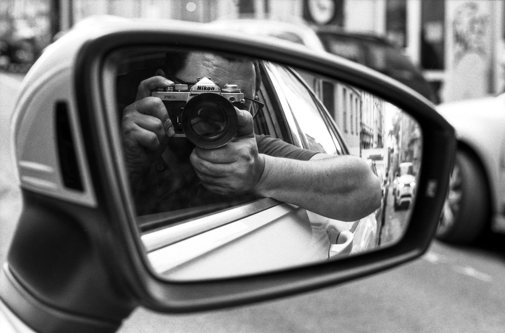

Qui suis-je ?
Je m’appelle Jérôme Michaud, je suis passionné de photographie depuis toujours.
Immortaliser une scène, un portrait, un paysage est pour moi une grande source d’épanouissement, d’autant plus en argentique et en noir et blanc.
Mon oeil est en perpétuelle recherche de cadrages, de compositions et d’instants marquants qui attireront mon regard.
J’apprécie autant la fugacité d’un instant capturé au détour d’une ruelle que le temps long de la contemplation avant le déclenchement.
Voir la galerie